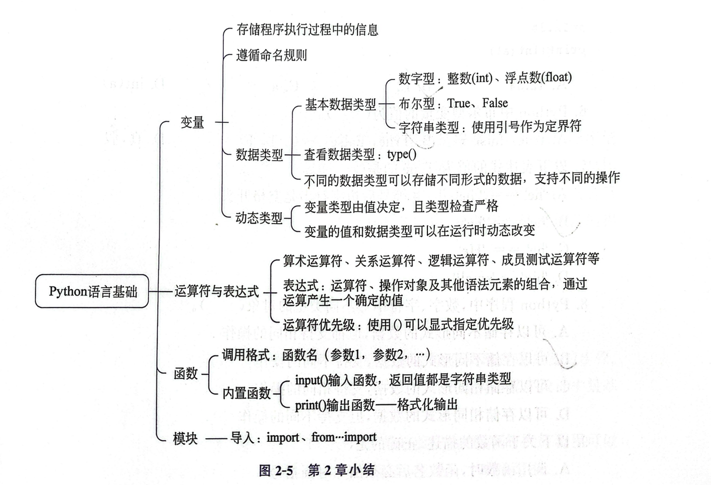

x = 3：内存中存放 3，变量 x 指向它
x → 3
常量与变量 · 运算符与表达式 · 数据类型 · 内置函数 · 基本输入输出 · 模块 · 综合应用
Chapter Overview · 先看整体，再逐个模块学习
本次课将深入学习Python的核心语法：变量、运算符、数据类型、输入输出和模块。
本次课分为7个模块，每个模块都融入了AI渗透点，用当前所学语法解释AI内部机制。点击卡片可跳转到对应模块。
下图是教材中第2章小结的思维导图，本网页全部知识点均以它为依据展开。右侧是可交互的知识树，点击节点即可跳转到对应讲解模块，点击三角可展开/收起分支。

怎么让电脑记住数据 · 变量是贴在值上的便利贴
3、3.5。变量名 = 值。程序代码按照书写顺序依次执行，所有变量必须先定义后使用，否则会输出报错信息。# 变量通过赋值方式创建，格式：变量名 = 值 name = "Zhang San" age = 18 print(name) print(age) type(age) # 查看变量的数据类型
print(name) # 还没有定义 name，直接使用会报错
Name和name是不同的变量。number_of_students、max_score。| 变量名 | 是否正确 | 说明 |
|---|---|---|
num_student | 合法，推荐 | 见名知义，snake_case风格 |
sName | 合法，推荐 | 大小写敏感，sName 与 sname 是两个变量 |
true | 合法但不可取 | True 是关键字，true（小写）不是，但极易混淆 |
sum | 不推荐 | 与内置函数 sum() 重名，会覆盖其功能 |
2month | 不合法 | 以数字开头 |
x$2 | 不合法 | 包含标点符号 $ |
and | 不合法 | 是Python关键字 |
关键字是指已被Python使用的标识符，用来表达特定的语义，不允许通过任何方式改变它们的含义。可以用 keyword 模块查看全部关键字：
import keyword print(keyword.kwlist) # 输出全部关键字列表
内置函数是Python解释器自带的函数，如果变量名与内置函数重名，则会覆盖函数原来的功能。例如写了 sum = 0 之后，再调用 sum([1,2,3]) 就会报错，可用 del sum 恢复。
dir(__builtins__) # 查看内置模块中所有的名字（含内置函数）
Python语言中的变量存储的是其值在内存的地址。赋值语句的执行过程：首先把等号右侧表达式的值计算出来，然后在内存中寻找一个位置把值存放进去，最后创建变量并指向这个内存地址。变量的值是可以改变的——重新赋值时，变量会改指向新的内存位置。
x = 3：内存中存放 3，变量 x 指向它
x → 3
x = 6：内存中存放 6，变量 x 改指向它（3仍在内存中）
x → 6
x = 3 # 此时x是整数 type(x) x = "Python" # 重新赋值为字符串 type(x) x = True # 再赋值为布尔值 type(x)
假设一个员工每小时的工作薪酬为50元，每天工作8小时，每月工作22天。计算其每月薪酬为多少？如果每小时薪酬上调为80元，每月薪酬又是多少？
# 例2-1：员工月薪计算（变量与常量） # 每小时50元，每天工作8小时，每月工作22天 hourly_salary = 50 # 变量：时薪 month_salary = hourly_salary * 8 * 22 # 表达式：月薪 = 时薪×每天小时×每月天数 print(month_salary) hourly_salary = 80 # 时薪上调为80元（变量值可改变） month_salary = hourly_salary * 8 * 22 print(month_salary)
w 是模型参数（就是一个变量），每次根据误差调整 w，就是一次学习。GPT有几千亿个这样的 w。全程没有循环、没有AI库，只有赋值 + 算术。
# AI训练最小演示：一个参数w的学习
x, y_true = 2.0, 10.0
w = 1.0 # 初始猜测
lr = 0.1 # 学习率
# 第1次学习：预测 - 误差 - 调整w
pred = w * x
w = w - lr * (pred - y_true) * x
print(w) # 2.6
# 第2次学习
pred = w * x
w = w - lr * (pred - y_true) * x
print(w) # 3.56
# 第3次学习
pred = w * x
w = w - lr * (pred - y_true) * x
print(w) # 4.136
# 正确答案 w = 5.0（因为 5*2=10）
print("正确答案 w = 5.0")
怎么让电脑算题目 · 算术/关系/逻辑/赋值/成员
+ 对数字是相加，对字符串是拼接）。() 显式指定优先级，同时也能提高代码的可读性。| 运算符 | 名称 | 示例 | 说明 |
|---|---|---|---|
+ | 加 | 7 + 2 = 9 | 数值相加，字符串拼接 |
- | 减 | 7 - 2 = 5 | 数值相减 |
* | 乘 | 7 * 2 = 14 | 数值相乘，字符串重复 |
/ | 除 | 7 / 2 = 3.5 | 结果永远是float |
// | 整除 | 7 // 2 = 3 | 向下取整，余数永远非负 |
% | 取余 | 7 % 2 = 1 | 取除法的余数 |
** | 幂 | 2 ** 3 = 8 | 乘方，不是 ^ |
/ 结果永远是float（7/2=3.5），// 是向下取整（7//2=3），^ 是位异或不是幂！# 算术运算符：+ - * / // % ** 7 / 2 # 除法，结果永远是float 7 // 2 # 整除，向下取整 7 % 2 # 取余 2 ** 3 # 幂运算 -7 // 2 # 向下取整，结果是-4而不是-3！ 2 ^ 3 # ^ 是位异或，不是幂运算！
关系运算符比较两个对象的值的大小，结果为布尔值（True / False）。关系运算符可以连用，例如 1 < 3 < 5 等价于 1 < 3 and 3 < 5。
| 运算符 | 含义 | 示例 | 结果 |
|---|---|---|---|
== | 等于（比较，不是赋值 =） | "abc" == "abc" | True |
!= | 不等于 | 3 != 5 | True |
> < | 大于 / 小于 | 3 > 5 | False |
>= <= | 大于等于 / 小于等于 | 5 >= 5 | True |
# 关系运算符：== != > < >= <= 3 > 5 3 < 5 1 < 3 < 5 # 关系运算符可以连用 "abc" == "abc" "abc" == "ABC" # 字符串比较大小写敏感 5 >= 5
逻辑运算符主要用于连接条件表达式从而构成更复杂的表达式，运算结果为布尔值（True / False）。and 和 or 具有惰性求值（短路）的特点，连接多个表达式时只计算必须要计算的值。
| a | b | a and b | a or b | not a |
|---|---|---|---|---|
| True | True | True | True | False |
| True | False | False | True | False |
| False | True | False | True | True |
| False | False | False | False | True |
# 逻辑运算符：and or not 3 > 5 and 1 / 0 # 左边为False，右边压根没算！(短路) 3 > 5 or "hello" # 左边为False，返回右边的值 not True # 优先级：not > and > or；记不住就加括号！ True or False and False (True or False) and False
复合赋值运算符：+= -= *= /= //= %= **=。例如 x += 3 等价于 x = x + 3。
++ 和 -- 运算符！x++ 是语法错误，自增要写成 x += 1。# 复合赋值：x op= 值 等价于 x = x op 值 x = 5 x += 3 # x = x + 3 = 8 x *= 2 # x = x * 2 = 16 x //= 4 # x = x // 4 = 4 x **= 3 # x = x ** 3 = 64 print(x)
成员测试运算符：测试一个对象是否为另一个对象的元素，结果为布尔值。
# 成员测试运算符：in / not in "th" in "Python" # 子串是否在字符串中 "Py" not in "Python" 3 in [1, 2, 3] # 元素是否在列表中 "北京" in "中华人民共和国首都北京" # 中文也可以
表达式中运算符优先级的规则为：算术运算符的优先级最高，其次是位运算符、成员测试运算符、关系运算符、逻辑运算符。为了避免优先级错误，最好使用圆括号 () 显式指定优先级，同时也能提高代码的可读性。
| 优先级 | 运算符 | 说明 |
|---|---|---|
| 1（高） | ** | 幂运算 |
| 2 | * / // % | 乘、除、整除、取余 |
| 3 | + - | 加、减 |
| 4 | == != > < >= <= | 比较（关系）运算 |
| 5 | not | 逻辑非 |
| 6 | and | 逻辑与 |
| 7（低） | or | 逻辑或 |
# 先乘除后加减，幂最高；加括号最稳妥 2 + 3 * 4 # 先算 3*4，再 +2 (2 + 3) * 4 # 括号显式指定优先级 2 ** 3 ** 2 # 幂运算从右向左结合：2**9 (2 ** 3) ** 2 # 加括号后：(2**3)**2
y = w1*x1 + w2*x2 + w3*x3 + b，权重不同 = 模型不同 = 判断标准不同。置信度就是 float 表示的概率 + 阈值判断（prob > 0.5 → 是猫）。
# 神经元计算演示
# 输入：耳朵尖度、胡须长度、眼睛颜色
x1, x2, x3 = 0.9, 0.7, 0.8
# 权重（模型学到的参数）
w1, w2, w3 = 0.5, 0.3, 0.2
b = 0.4
# 神经元 = 加权求和
y = w1 * x1 + w2 * x2 + w3 * x3 + b
print(f"加权和 = {y:.3f}")
# sigmoid激活函数 → 概率
import math
prob = 1 / (1 + math.exp(-y))
print(f"是猫的概率 = {prob:.2%}")
# 阈值判断
print("判断：", "是猫" if prob > 0.5 else "不是猫")
and/or/not 组合条件来做决策。即使在今天，很多AI系统的前置过滤仍然是规则引擎。
# 规则引擎：贷款审批AI（早期AI的核心逻辑）
def loan_approve(age, income, credit_score, has_job):
# 规则1：年龄必须在18-65岁
age_ok = (age >= 18) and (age <= 65)
# 规则2：有工作 且 月收入 > 5000
income_ok = has_job and (income > 5000)
# 规则3：信用分 > 600
credit_ok = (credit_score > 600)
# 最终决策：所有条件都满足
approve = age_ok and income_ok and credit_ok
return approve
# 这就是 and/or/not 的力量——组合简单条件表达复杂规则
result = loan_approve(25, 8000, 700, True)
print("审批结果：", "通过" if result else "拒绝")
数字·字符串·布尔 · 类型转换与浮点精度陷阱
数据类型是用来解决不同形式的数据在程序中的表达、存储和操作问题。Python支持的基本数据类型包括：数字、字符串、列表、元组、字典、集合。使用 type() 函数可以查看对象的数据类型。不同类型的对象可以存储不同形式的数据，支持不同的操作。
| 类型 | 示例 | 说明 | 常见运算 |
|---|---|---|---|
int 整数 | 42, -10 | 整数，无大小限制 | + - * // % ** |
float 浮点数 | 3.14, 1.5e10 | 浮点数，有精度限制 | + - * / ** |
str 字符串 | "hello", "你好" | 字符串，用引号包裹 | + * in len() |
bool 布尔 | True, False | 布尔值，只有两个 | and or not |
list 列表 | [1, 2, 3] | 有序、可修改的序列 | 索引、切片、len() |
tuple 元组 | (1, 2) | 有序、不可修改的序列 | 索引、切片、len() |
dict 字典 | {"name": "Tom"} | 键值对映射 | 按键访问 |
set 集合 | {1, 2, 3} | 无序、不重复 | 成员测试、集合运算 |
# 使用type()函数可以查看对象的数据类型
age = 20
type(age)
type(0.3)
type(1e-6)
type(True)
type("Python")
Python中内置的数字类型有整型（int）、浮点型（float）、复数型（complex）。
1e-6、1.5e10）。a + bj，如 3 + 4j。# int：无大小限制（2的1000次方，一个302位的大数） 2 ** 1000 # float：精度陷阱！ 0.1 + 0.2 0.1 + 0.2 == 0.3 # 正确做法：用差值判断 abs(0.1 + 0.2 - 0.3) < 1e-9 # 科学计数法 1.5e10
==，要用 abs(a - b) < 1e-9。整数精确，浮点数近似。0.1+0.2≠0.3 这种微小误差，经过几千亿次运算后被放大，导致AI有时会给出看似合理但错误的答案——这就是AI幻觉的数学根源之一。
数字类型之间可以强制转换：int()、float()、str()、bool()。转换失败会报 ValueError。
# int()：转整数
int("123") # 字符串→整数
int(3.99) # 浮点数→整数，截断不是四舍五入！
# float()：转浮点数
float("3.14")
# str()：转字符串
str(123)
# bool()：转布尔值
bool(0) # 0是空值 → False
bool(1) # 非0 → True
bool("") # 空字符串 → False
bool("hello") # 非空字符串 → True
bool(None) # None → False
# 转换失败会报错
int("abc")
布尔型：只有 True 和 False 两个值，对应 1 和 0，主要用于逻辑判断。
# 布尔型：只有True和False两个值，对应1和0 3 > 5 # 不成立就是False 3 < 5 # 成立就是True
# 例2-2：定义三位自然数，拆出百位、十位、个位 number = 123 a = number // 100 # 百位：整除100 b = number // 10 % 10 # 十位：先整除10再取余 c = number % 10 # 个位：取余10 print(a, b, c)
字符串的本质是字符序列，在Python中用引号括起来的一个或一串字符就是字符串。引号称为定界符：单引号、双引号、三单引号、三双引号；不同形式的引号可以嵌套；三引号主要用于表示多行字符串。
# 字符串：用引号括起来的字符序列，引号称为定界符 name = 'Linda' type(name) phone = "123456" # 双引号，仍然是字符串 type(phone) phone = 123456 # 去掉引号，变成数字 type(phone) # 三引号表示多行字符串 str1 = '''Hello everyone! Hello world!''' print(str1) # 引号嵌套 str2 = "I'm 18 years old." print(str2)
Python3中的字符默认为Unicode编码，可以表示世界上任何书面语言的字符，包括中文。
| 字符 | P | y | t | h | o | n |
|---|---|---|---|---|---|---|
| 正索引 | 0 | 1 | 2 | 3 | 4 | 5 |
| 负索引 | -6 | -5 | -4 | -3 | -2 | -1 |
# 索引：从0开始，负数从后往前
s = "Python"
s[0] # 第一个字符
s[-1] # 最后一个字符
# 切片：[start:end]，含start不含end
s[0:3] # 取第0~2个字符
s[:3] # start省略 = 从0开始
s[3:] # end省略 = 到末尾
# 常用操作
len(s) # 长度
s.upper() # 转大写
s.lower() # 转小写
"th" in s # 成员判断
s.replace("P", "J") # 替换
s[1:3] 取的是第 1 到 2 个字符（含start不含end），不是第1到第3个！列表、元组、字典、集合和字符串，都是Python中常用的序列数据结构。很多复杂的程序设计都要使用这些数据结构。
# 列表、元组、字典、集合的类型
type([1, 2, 3]) # 列表 list
type((1, 2)) # 元组 tuple
type({"name": "Tom"}) # 字典 dict
type({1, 2, 3}) # 集合 set
Python自带的工具箱 · type/len/print/abs/round/max/min
函数是一段封装好的、可以实现某种特定功能的Python程序。用户不用关心程序实现的细节，通过函数名及其参数直接调用即可。
函数名(参数1, 参数2, ……)Python内置了丰富的函数资源，封装在内置模块 __builtins__ 中，在程序中可以直接使用，不需要import（共70多个内置函数）。
| 函数 | 示例 | 说明 |
|---|---|---|
type() | type(3) → int | 查看数据类型 |
len() | len("abc") → 3 | 求长度（字符串/列表等） |
print() | print("hi") → hi | 输出到屏幕 |
input() | input("名：") | 从键盘输入（返回字符串） |
abs() | abs(-5) → 5 | 求绝对值 |
round() | round(3.14159, 2) → 3.14 | 四舍五入（可指定位数） |
max() / min() | max(3, 7, 2) → 7 | 求最大值/最小值 |
int / float / str | int("3") → 3 | 类型转换函数 |
pow() | pow(2, 10) → 1024 | 幂运算 |
help() | help(print) | 查看对象的联机帮助 |
# 调用格式：函数名(参数1, 参数2, ……) name = 'Linda' type(name) # 查看对象类型函数 price = 32.58 round(price, 1) # 四舍五入函数：保留1位小数 int(price) # 数据类型转换函数：浮点数转换为整数
abs(-5) # 绝对值
round(3.14159, 2) # 四舍五入，保留2位小数
max(3, 7, 2) # 最大值
min(3, 7, 2) # 最小值
len("abc") # 长度
pow(2, 10) # 幂运算
使用 help() 函数可以查看某个对象的联机帮助信息。
help(round) # 查看round函数的帮助信息
怎么和用户对话 · print()输出与input()输入
【语法】input([prompt])
prompt：提示文本，该参数是可选的，类型为字符串。input() 从键盘接收的任何输入，都被作为字符串类型。使用 int() 或 float() 可转换为数字。
input() 返回的是字符串，不能直接做数学运算（"20" + 1 会报 TypeError）。必须先用 int() 或 float() 转换。# input()从键盘接收的任何输入，都被作为字符串类型
a = input("Please input: ")
type(a) # 此时a是字符串
a = int(a) # 用int()转换为整型数
type(a)
# 例2-3：使用input从键盘输入名字，显示"Hello XXX"形式的问候语
name = input('Please input your name: ')
print('Hello ' + name)
# 例2-4：从键盘输入两个整数，计算这两个数字之和
num1 = int(input('num1: ')) # 将输入的数据转换为整数
num2 = int(input('num2: '))
print(num1 + num2)
【语法】print(value, ..., sep=' ', end='\n', file=sys.stdout)
value：输出的值，可以有多个。输出多个值时，需要用英文逗号分隔。sep：输出结果中各个值之间的分隔符，默认为空格。end：输出数据之后以什么结尾，默认为换行符。file：输出位置，默认为标准控制台（屏幕）。a = 'www'
b = 163
c = 'com'
print(a, b, c) # 输出多个对象，默认用空格分隔
print(a, b, c, sep='.') # sep设置分隔符
print(a, end=',') # end指定结尾符，不换行
print("完成")
| 格式符 | 含义 | 示例 | 结果 |
|---|---|---|---|
%s | 字符串 | '%s' % 'Python' | Python |
%d | 整数 | '%d' % 90 | 90 |
%f | 浮点数（默认6位小数） | '%f' % 88.5 | 88.500000 |
# 使用%运算符设置格式：'%s %d %f' % (值1, 值2, 值3)
subject = "Python"
score1 = 90
score2 = 88.5
print('%s %d %f' % (subject, score1, score2))
# format方法：{}占位，{0}{1}按下标引用，:.2f保留2位小数，<10s左对齐 >10s右对齐
print('{:<10s} and {:>10s}'.format('hello', 'world'))
x, y = 4.123, 7.1563
print('x={0}, y={1:.2f}'.format(x, y)) # y保留2位小数
# f-string：在字符串前加f，用{变量名}直接引用
name = "张三"
age = 20
print(f"姓名：{name}，年龄：{age}")
print(f"明年年龄：{age + 1}") # f-string中可以做运算
pi = 3.1415926
print(f"π ≈ {pi:.2f}") # 保留2位小数
input() 和 print() 的循环——接收用户输入（字符串），处理后输出结果（字符串）。区别在于：ChatGPT内部是几千亿参数的神经网络，而不是 if-else，但输入输出的接口完全一样。
# AI单轮对话的最小实现
def simple_ai(user_input):
"""极简AI：根据关键词回复"""
if "你好" in user_input:
return "你好！我是AI助手，有什么可以帮你的？"
elif "名字" in user_input:
return "我叫SimpleAI，是一个用Python写的极简对话模型。"
elif "天气" in user_input:
return "抱歉，我还没有联网，无法查询天气。"
elif "谢谢" in user_input:
return "不客气！随时为你服务。"
else:
return "我还在学习中，暂时无法理解这个问题。"
# 单轮对话：input + print
user_input = input("你：")
response = simple_ai(user_input)
print(f"AI：{response}")
# Prompt四要素参数化生成器
def build_prompt(role, task, context, output_format):
"""构建高质量Prompt"""
prompt = f"""你是一位{role}。
请完成以下任务：{task}
背景信息：{context}
输出要求：{output_format}"""
return prompt
# 示例：数据分析助手
prompt = build_prompt(
role="资深数据分析师",
task="分析这份销售数据并给出建议",
context="数据包含2024年1-6月的月度销售额，1月100万，6月200万",
output_format="用表格展示趋势，最后给出3条具体建议"
)
print(prompt)
怎么调用别人写好的工具 · import与random模块
模块是一组程序代码，包含了多个函数、对象及其方法。Python模块分为三类：
import 语句导入当前程序。| 部分内置模块 | 说明 |
|---|---|
math | 数学计算 |
datetime | 日期操作 |
statistics | 计算列表中数字的平均值或者常见统计数据 |
random | 随机操作 |
time | 时间相关 |
os | 操作系统接口 |
json | JSON数据处理 |
直接导入该模块的所有内容，使用模块中的某个具体函数时，要在函数名前加上模块的名字。
# 方法一：import 模块名 import math math.sin(0.5) # 使用函数时要加模块名前缀 math.cos(0.5)
导入模块中的某个具体函数，可以在程序中直接使用函数名。
# 方法二：from ... import ... from math import sin, cos sin(0.5) # 可以直接使用函数名 cos(0.5)
为模块或者函数定义一个别名。
# 方法三：from ... import ... as ... from math import sin as ms ms(0.5)
| 函数 | 说明 | 示例 |
|---|---|---|
random.randint(a, b) | [a, b]范围内的随机整数 | random.randint(1, 100) |
random.random() | [0.0, 1.0)范围内的随机浮点数 | random.random() |
random.uniform(a, b) | [a, b]范围内的随机浮点数 | random.uniform(1.5, 3.5) |
random.choice(seq) | 从序列中随机选一个元素 | random.choice([1, 2, 3]) |
random.shuffle(seq) | 打乱列表的顺序 | random.shuffle([1, 2, 3]) |
random.seed(n) | 设置随机种子（结果可复现） | random.seed(42) |
# 例2-5：使用random模块的函数进行随机选择操作 from random import choice direction = choice(['N', 'S', 'E', 'W']) print(direction)
# random常用函数 import random random.randint(1, 100) # 1-100的随机整数 random.random() # 0-1的随机浮点数 random.uniform(1.5, 3.5) # 1.5-3.5的随机浮点数 random.choice([1, 2, 3]) # 从列表随机选一个 random.seed(42) # 设置随机种子（可复现） random.randint(1, 100) # 种子相同，结果相同
random.choice() 就是最简单的“生成”；AI的每一步输出都是一次加权随机选择，temperature（温度参数）控制随机性大小。
# 生成式AI的最小演示：随机选择下一个词 from random import choice word = choice(["机器", "学习", "深度", "模型", "数据"]) print(word)
串起来写完整小程序 · 闰年判断 / 圆面积 / 猜数字 / BMI
综合应用把本章的变量、运算符、数据类型、内置函数、输入输出、模块等所有知识点串起来，是检验学习效果的最佳案例。
闰年规则：能被4整除但不能被100整除，或能被400整除。
# 例2-6：判断某个年份是否为闰年
# (能被4整除 且 不能被100整除) 或 能被400整除
year = int(input('year = '))
print((year % 4 == 0 and year % 100 != 0) or (year % 400 == 0))
计算 y = sin(x) + 2×sqrt(x + e⁴) − (x+1)³，结果保留2位小数。
# 例2-7：输入x，计算并显示表达式的值，结果保留2位小数
import math
x = input('input x: ')
x = float(x)
y = math.sin(x) + 2 * math.sqrt(x + math.exp(4)) - pow((x + 1), 3)
y = round(y, 2)
print('y =', y)
# 例2-8：从键盘输入圆的半径，求圆的面积，并格式化输出结果
import math
r = input('请输入半径: ')
r = float(r)
s = math.pi * pow(r, 2)
print('圆的面积：{:.2f}'.format(s))
这个小游戏整合了变量、运算符、数据类型、内置函数、输入输出、模块等所有知识点。
# 猜数字游戏：整合本次课所有知识点
import random
# 变量 + 模块 + 运算符
secret = random.randint(1, 100) # 随机生成1-100的秘密数字
count = 0 # 计数变量
print("=== 猜数字游戏 ===")
print("我想了一个1到100之间的数字，你来猜！")
# 游戏循环（下节课学while，这里先体验）
while True:
# input + 类型转换
guess = int(input("请输入你的猜测："))
count += 1 # 复合赋值运算符
# 关系运算符 + 逻辑运算符
if guess == secret:
print(f"恭喜你猜对了！答案就是{secret}")
print(f"你一共猜了{count}次")
break # 跳出循环
elif guess < secret:
print("太小了，再大一点！")
else:
print("太大了，再小一点！")
网页模拟版：我已经想好了一个 1~100 之间的数字，你来猜！（逻辑与上面Python代码完全一致）
BMI（身体质量指数）= 体重(kg) / 身高(m)的平方。整合了输入输出、类型转换、算术运算、条件判断和格式化输出。
# BMI健康计算器
print("=== BMI健康计算器 ===")
# 输入 + 类型转换
weight = float(input("请输入体重（kg）："))
height = float(input("请输入身高（m）："))
# 算术运算符 + 幂运算
bmi = weight / (height ** 2)
# 格式化输出
print(f"你的BMI指数为：{bmi:.1f}")
# 条件判断（关系运算符 + 逻辑运算符）
if bmi < 18.5:
category = "偏瘦"
advice = "建议增加营养摄入，适当增肌"
elif 18.5 <= bmi < 24:
category = "正常"
advice = "恭喜！请保持健康的生活方式"
elif 24 <= bmi < 28:
category = "偏胖"
advice = "建议控制饮食，增加有氧运动"
else:
category = "肥胖"
advice = "建议咨询医生，制定科学减重计划"
print(f"健康等级：{category}")
print(f"健康建议：{advice}")
| 知识点 | 在综合应用中的体现 |
|---|---|
| 变量 | secret、count、weight、height、bmi 等 |
| 运算符 | == < > += **，以及逻辑组合（闰年判断） |
| 数据类型 | int() / float() 类型转换 |
| 内置函数 | print()、input()、int()、float()、round() |
| 模块 | import random / import math |
| 控制流（下章） | if / elif / else / while / break（第3章详学） |
Summary · 7大模块知识图谱 + 10个高频错误 + 课后任务
| 模块 | 核心知识点 | AI渗透点 |
|---|---|---|
| 2.1 常量与变量 | 赋值、命名规则、内存地址、动态类型 | AI-01 变量 = 模型参数 |
| 2.2 运算符与表达式 | 算术 / 关系 / 逻辑 / 赋值 / 成员、优先级 | AI-02/03/04 神经元 / 置信度 / 规则引擎 |
| 2.3 数据类型 | int / float / str / bool、类型转换、字符串 | AI-05/08 Prompt = 字符串、AI幻觉 = 浮点精度 |
| 2.4 内置函数 | type / len / print / abs / round / max / help | AI-09 让AI解释报错（教师演示） |
| 2.5 基本输入输出 | print(sep/end/格式化)、input() | AI-07/10 单轮对话、Prompt四要素 |
| 2.6 模块的使用 | import / from...import、random随机数 | AI-06 生成式AI = 概率词语接龙 |
| 2.7 综合应用 | 猜数字游戏、BMI计算器 | 整合所有知识点 |
| 序号 | 错误写法 | 正确写法 | 错误原因 |
|---|---|---|---|
| 1 | sum = 0 | total = 0 | 覆盖内置函数 sum() |
| 2 | 2name = "Tom" | name2 = "Tom" | 变量名不能数字开头 |
| 3 | 0.1+0.2 == 0.3 | abs(0.1+0.2-0.3) < 1e-9 | 浮点数精度问题 |
| 4 | age = input("年龄：") | age = int(input("年龄：")) | input返回字符串 |
| 5 | 2 ^ 3 = 8 | 2 ** 3 = 8 | ^是位异或，**才是幂 |
| 6 | s[1:3] 取第1~3个 | s[1:3] 取第1~2个 | 切片含start不含end |
| 7 | x++（自增） | x += 1 | Python没有++运算符 |
| 8 | if x = 5: | if x == 5: | =是赋值，==是比较 |
| 9 | int(3.99) = 4 | int(3.99) = 3 | int是截断不是四舍五入 |
| 10 | print name | print(name) | Python3函数必须加括号 |
提交要求：每道题写注释，保存为 .py 文件，命名：学号_姓名_T2-XX.py